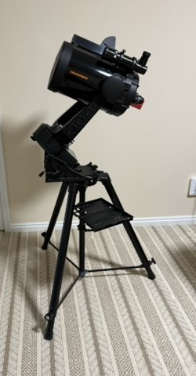
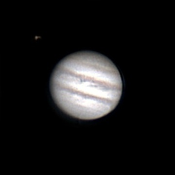

evanshq.me · Vintage Schmidt-Cassegrain · since about 1991
A 1985 black-tube C8, still in use
I bought this Celestron Super C8 Plus used, as a complete package, around 1991–92. It's a 1985 model: the black-tube version, on its original fork, equatorial wedge and adjustable tripod.
I still use it for visual observing and, these days, for planetary imaging with a digital camera. In the film days I photographed through it with an Olympus OM-1. The Seestar S50 Pro page covers my newer smart telescope.

I rebuilt the Byers drive, cleaning it and relubricating it with Super Lube.
The scope came with an AccuTrack Model 3119 drive corrector and its OmniGuide hand controller. The 3119 is a dual-axis corrector sold from 1978 to 1986: it trims the RA drive's speed and runs a declination motor for guiding. A previous owner had modified its declination jack. I removed the modification and use an adapter for the original RCA jack.
Later additions: a Telrad, a guide scope, an autofocuser and an f/6.3 reducer/corrector.
In the film days I took images through the C8 with an Olympus OM-1, guiding the exposures by hand through an off-axis guider with an illuminated crosshair eyepiece.
Today I use it for planetary imaging, with a ZWO ASI678MC camera at the C8's focus behind an IR-cut filter, captured on a small fanless PC.

More photos of the C8 to come.